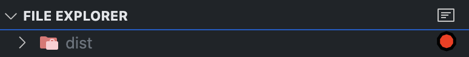
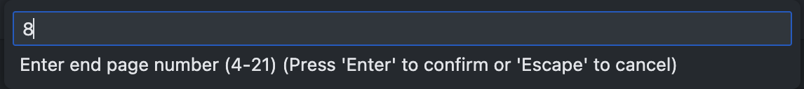
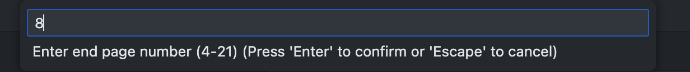
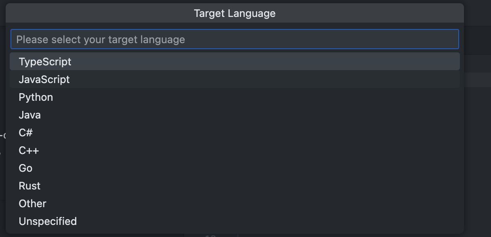

svsmate - v0.0.1
SVSmate
The Ultimate VS Code Extension for SUSTechers

Request Feature · Report Bug · 中文文档 »


🚀 About the Project
This project originated as the final project for the Spring 2025 CS304 - Software Engineering.
Our goal is to develop a powerful and user-friendly VS Code extension tailored for SUSTechers, aiming to simplify their academic workflows — particularly operations related to Blackboard.
✨ Key Features
- 🔗 Seamlessly connect VS Code with your personal Blackboard data
- 📅 Automatically sync your schedule and assignments, and manage them with ease
- 📄 Extract code snippets from PDF course materials
- 🤝 Collaborate on files with teammates in real time
- 🤖 Handle tasks more efficiently with AI-powered assistance
💾 Installation
SVSmate can be installed via the VS Code Marketplace ».
Or download .vsix manually in Release ».
🛠️ Usage
🔗 Blackboard Crawler
To ensure this feature works correctly, please configure your Blackboard Settings as shown below:
You can choose to update the entire course database, a specific semester, or individual course materials manually.
The extension also intelligently downloads Blackboard documents directly into your workspace.
Dive in and streamline your academic workflow!
Better check your VPN status before start crawling.
📅 Task Scheduler
Manage your SUSTech tasks effortlessly in VS Code. Tasks can be imported directly from Blackboard, as shown below:
Click the calendar icon at the bottom of the Blackboard Calendar.
Paste your Blackboard calendar link to import tasks.
Once imported, you're free to edit, organize, and schedule them as you like.
🤖 AI-Powered Features
Currently tested with the Deepseek API, though other APIs should also work in theory.
After configuring your API key, you can:
- Chat with your API agent:
@mate-API - Automatically download Blackboard files to the correct directory
- Generate intelligent subtask breakdowns
- Read PDFs and extract code into files
Unlock the power of automation and AI to supercharge your study experience!
📄 Code Extractor
Quickly generate runnable code based on selected PDF content using AI.
To use this feature:
- Click the icon on the right side of the Explorer.

-
Select the desired PDF file.
-
Input the start and end page numbers of the PDF.
 
- Specify the type of code to generate.

- Result will be generated in the current workspace.
The AI will process the selected content and generate runnable code directly into your open workspace. Simplify your workflow and save time with this powerful feature!
🤝 Collaborate Editing
todo
📖 Documentation
Click here to view our Develop Document »
💬 Contribute
Any contributions you make are greatly appreciated.
If you have a suggestion that would make this better, please fork the repo and create a pull request. You can also simply open an issue with the tag "enhancement".
Don't forget to give our project a ⭐️! Thanks again!
- Fork the Project
- Create your Feature Branch
git checkout -b feature/AmazingFeature - Commit your Changes
git commit -m 'feat: AmazingFeature' - Push to the Branch
git push origin feature/AmazingFeature - Open a Pull Request
TODO & Wanting
- [-] Add last update time in BB vault
👥 Contributors:
📜 License
Distributed under the MIT License. See LICENSE.txt for more information.